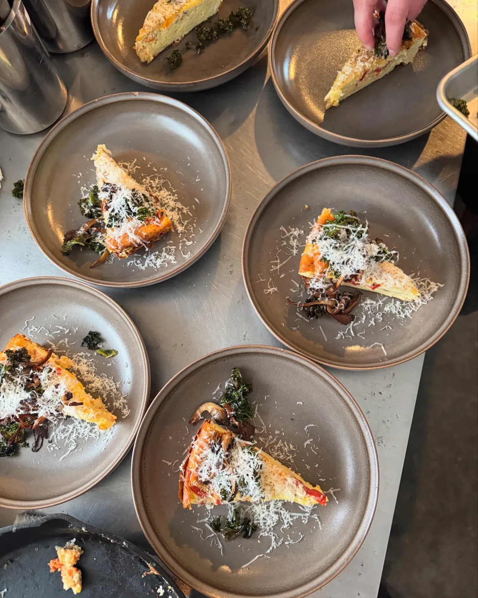
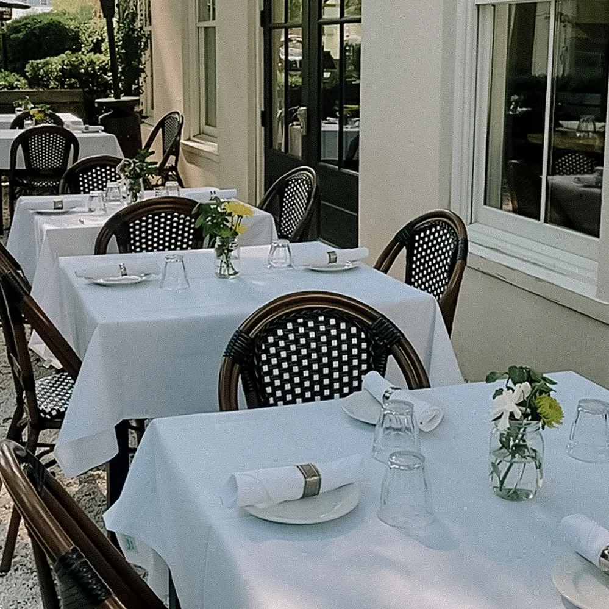
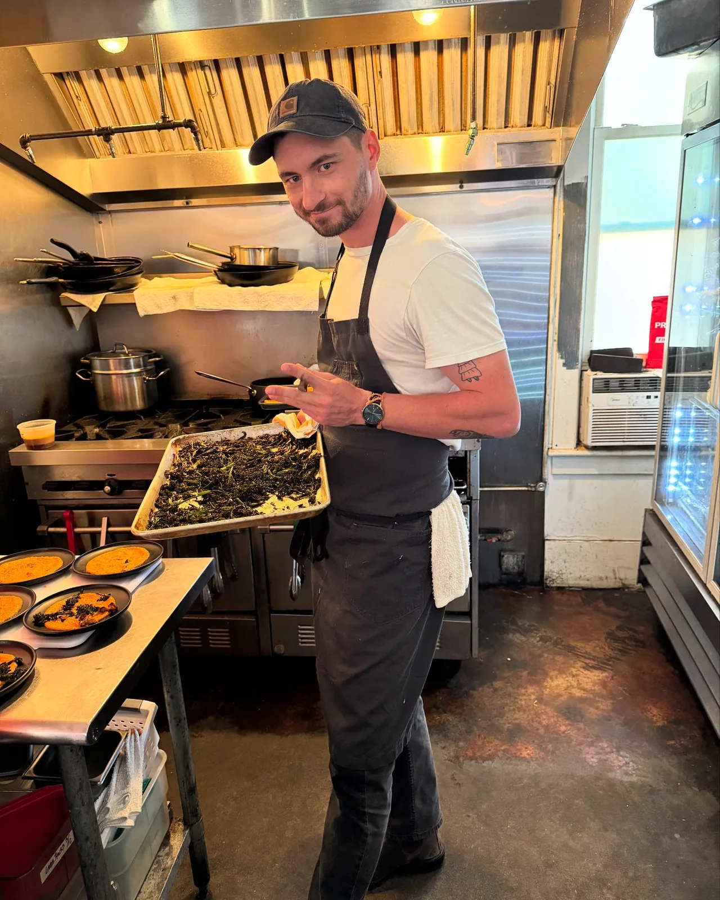
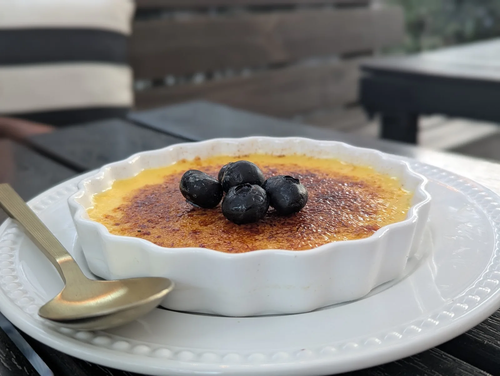

The same kitchen,
at your table
instead of ours.
Boards, family-style spreads and seated menus — cooked in the same kitchen, out of the same garden, carried to wherever you’re gathering.
Fantastic food, wonderfully presented for our catered event. Just perfect. Thank you!Julie Davis · Google review

Tell us the gathering. We’ll build the menu around it.
There is no fixed package, because there is no fixed menu — ours changes with what the garden and the farms are giving us that week. That is a feature, not an inconvenience.
Send us the date, the headcount and the shape of the thing — a grazing table, a seated dinner, a brunch, a drop-off of boards for an afternoon — and we’ll come back with a menu and a price for that week’s produce.
Grazing, seated, or somewhere in between.
Boards & grazing tables
Cheese and charcuterie, whipped ricotta with local honey, mezze with warm naan, crudités cut from the beds. The thing people actually crowd around.

Seated dinners
A plated menu built from the season — a starter, a salad out of the garden, a choice of two or three mains, and a wine beside each one.

Family style
Big platters down the middle of the table and everyone reaching. How we do Sunday Suppers, and how most parties end up eating.

Brunch
Our seated brunches have run to raspberry lemon brioche buns, a fennel, citrus and burrata salad, grits ’n gravy with a poached egg, and cornmeal waffles with pancetta.
We love being part of the moments that matter most to you.
Weddings & rehearsal dinners
Rehearsal dinners, receptions and the morning-after brunch.
Showers
Bridal showers and baby showers — the sort of afternoon a grazing table was invented for.
Milestones
Graduations, engagement parties, birthdays and anniversaries.
Business & village
Client dinners, board lunches, and gatherings for the neighbourhoods around Habersham.
A note on pricing
We would rather quote you honestly than publish a number that stops being true in a fortnight. Catering is priced per event — the menu, the headcount, the service and what the farms are charging that week all move it.
Send the details below and we’ll come back with something real.
Lead time
Sooner is better, especially in spring and around the holidays — we are a small kitchen and we close the restaurant when a party takes the whole night.
If your date is close, ring us rather than emailing: 843-466-3661.